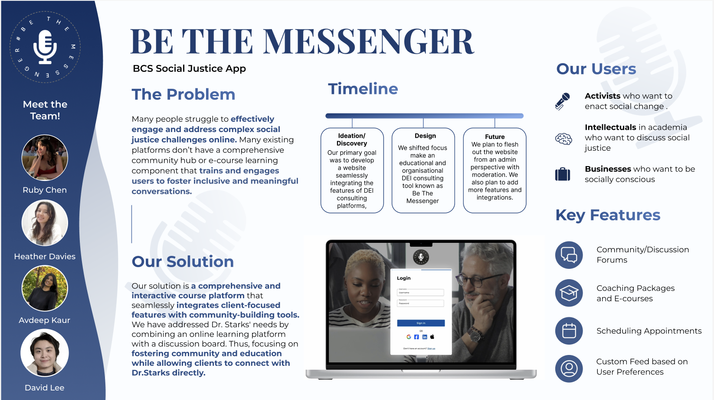

These are some of the UI/UX roles I've taken in Projects
UI/UX Designer ALS Resource Website
The ALS Resource App project for Boston Children's Hospital focused on enhancing an existing web application
to assist ALS patients in identifying needs and accessing resources.
I developed high-fidelity prototypes for key features, including an improved dashboard, comprehensive bookmarking system,
and accessibility settings tailored for ALS patients. We emphasized motor accessibility,
effective screen real estate usage, and responsive design for both desktop and mobile interfaces.
We helped transform the app into a more user-friendly and accessible tool for ALS patients and caregivers. ALS Website Link
UI/UX Designer Be the Messenger
The BCS and Associates' Social Justice Mobile App project successfully developed high-fidelity prototypes for a comprehensive
platform combining Dr. Chad Starks' course content with a community hub for social justice discussions.
Our Team prioritized key features such as coaching services scheduling, community engagement forums,
and user profiles, while focusing on an inclusive and action-oriented design approach.
Our team was also selected to present about our project on Spark's Demo Day.
